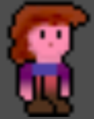
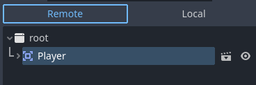
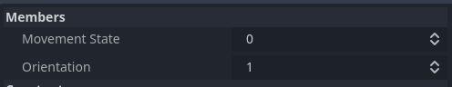
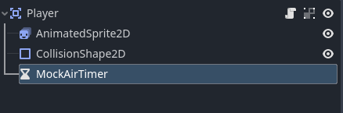
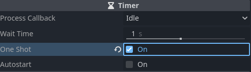
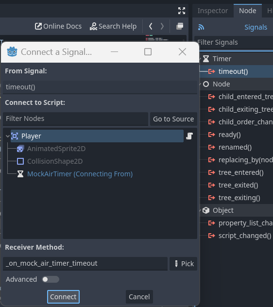

Day 1 - Controlling the player
So before we start a day: please look at the prerequisites and make sure you are familiar with all the links referred to.
Prerequisites
I started learning godot 4.1.1 yesterday.
What I did first is make the example 2D game there, after carefully reading up on the key concepts:
In case you, like me, are working in windows and have 2 old monitors connected via laptop docking station: my godot engine crashed while moving it to an external monitor.
Apparently, it's a known issue also here.
A new project
Let's start a new project.
Because Zelia once started out as an HTML5 webgame it might work well in the web again. Also I want to be able to compile to as many platforms as possible this time, so let's pick the Compatibility renderer:

Importing the player assets
Because Zelia has become a pretty big project we should pay attention to directory structure early on.
Let's make a subdir in the root folder named player with another subdir named images.
You can download her png files from assets/zelia-player.zip
Your FileSystem tab should now look like this:

Zelia also has a jump sound. Let's create a sounds dir for it. Here is her jump-sound.wav:

Player Node setup
For this bit we'll be guided by the instructions in Your first 2D game.
If you're missing details on how to execute the next steps, please refer to it.
- Add an
Area2Dnode and rename it toPlayer. - Save the
player.tscnfile inres://player/player.tscn - Make
Player's child nodes not selectable - Add an
AnimatedSprite2Dchild node with aSpriteFramesresource - Click
SpriteFramesagain to open theAnimationspanel.
{kind=link}
Setting up the animations
We need the following animation names in the list: - casting - dying - forward - idle - jumping - running
The asset files you downloaded give a good filename hint as to where they belong, but I will list them for you anyway.
Add the images like so:
- casting:
cast-1.pngup tocast-4.png - dying:
faint-1up tofaint-8.png - forward:
forward.png - idle:
stand-1.png - jumping:
jump.png - running:
run-1.pngup torun-5.pngANDrun-4.pngdown torun-2.png
Higher framerate
When testing the animation for running I noticed that it did not look as smooth as I was used to. Matching the original game let's change the framerate from 5 to 15 for dying and running:

Technical debt 1
In the original game casting was not - strictly speaking - an animation, but a set of casting orientations based on an angle. We will probably have to fix that later.
Setting up the screen
Zelia looks so small!
That makes perfect sense because she's only about 30 pixels tall. The original game resolution was fullscreen and matched the aspect ratio of your active monitor to make the game 320px wide.
After stumbling my own way through the settings, I looked up this guide on resolutions.
Although I would have preferred the outcome to look like this:

What I managed to achieve in godot by myself was blurry.

However, this reddit thread came to the rescue to help me end up with this:

The final resizable window setup I'm happy with
- Open
Project > Project Settings - Go to
Display > Window - Set
Viewport Widthto320 - And
Viewport Heightto180 - Make sure
Modeis set toWindowed - And that
Resizableis checked toOn - Set the
Stretchmode tocanvas_items - And the
Aspecttokeep - Then open
Render > Textures > Canvas Textures - And change
FiltertoNearest
Add a hitbox
So the original Zelia had pixel perfect collisions. I wrote everything myself, so it was quite a battery hog in modern machines and a performance killer in older machines. However, I mainly did that to avoid having to draw hitboxes and doing polygon based collision math myself.
If we want pixel perfect collision again, we'd probably follow this recipe on stackoverflow. For now, let's make do with a nice pill shape just like in the guide.
- Create another child node for
Playerof the typeCollisionShape2D. - Choose
CapsuleShape2Din the inspector tab next to Shape - 'Ungroup' the children of
Playerto make theCollisionShape2Dselectable - Align the box like in the screenshot below
- And 'group' them again.

Save everything and test the current scene with F6 (make sure Zelia's in the viewport).
Adding controls
The original game was written for a gamepad and tested with this (tr|d)usty controller:

Keyboard and mouse were added later and work quite differently.
So let's first create some dedicated inputs for running and jumping and see if we can fix the casting+aiming mechanic later.
Input Map
Open Project > Project Settings > Input Map.
Add these new Actions:
- Run right
- Run left
- Jump
Assign these keys to Run right:
- Keyboard 'D' -
D (Physical) - Keyboard Right arrow -
Right (Physical) - Joypad Axis 0 (
Left Stick Right,Joystick 0 Right - All Devices) - Joypad Button 14 (
D-pad Right - All Devices)
Assign these keys to Run left:
- Keyboard 'A' -
A (Physical) - Keyboard Left arrow -
Left (Physical) - Joypad Axis 0 (
Left Stick Left,Joystick 0 Left - All Devices) - Joypad Button 13 (
D-pad Left - All Devices)
And assign these keys to Jump:
- Keyboard 'W' -
W (Physical) - Keyboard Up arrow -
Up (Physical) - Joypad Button 0 - (
Buttom Action,Sony Cross,Xbox A,Ninendo B)
Player script
Finally, let's code some stuff, taking guidance from the official guide.
Attach a script to the Player-node and save it in res://player/player.gd
So in the original game there were some movement states I would like to keep using to make our rewrite easier:
from enum import Enum
class Orientation(Enum):
LEFT = 1
RIGHT = 2
NONE = 3
UP = 4
DOWN = 5
class MovementState(Enum):
IDLE = 1
RUNNING = 2
AIRBORNE = 3
JUMPING = 4
DYING = 5
CASTING = 6
FACING_FORWARD = 7
HOLDING_ITEM = 8
class CastDirection(Enum):
DIAG_DOWN = 1
FORWARD = 2
DIAG_UP = 3
UP = 4
DOWN = 5
Let's read up on how to port these python style enums to gdscript.
That looks nice and clean, let's define some inside our player.gd script for now.
Let's assign them to some properties in the _ready() func.
extends Area2D
enum Orientation { LEFT, RIGHT }
enum MovementState { IDLE, RUNNING, AIRBORNE }
# We will want to debug these states, let's export them as well
@export var movement_state : int
@export var orientation : int
func _ready():
movement_state = MovementState.IDLE
orientation = Orientation.RIGHT
func _process(delta):
pass
Test run
Run the current scene to test our property assignments.
To debug exported properties while running, go to the node tree window and pick Remote in stead of Local:

Then click the root-node first and then the Player-node.
The Inspector tab for Player should now show:

You can even change the property values through this interface!
Implement running animations
So let's now write some body for the _process() func.
Let's first write tests for the Run right and Run left actions to set the movement
func _process(delta):
if Input.is_action_pressed("Run right"):
orientation = Orientation.RIGHT
movement_state = MovementState.RUNNING
elif Input.is_action_pressed("Run left"):
orientation = Orientation.LEFT
movement_state = MovementState.RUNNING
else:
movement_state = MovementState.IDLE
To test out whether our state changes work we run the current scene and open the Remote inspector for player. (Remember: click the root-node first and then the Player-node).
I noticed a slight delay in the inspector, but I'm guessing that's due to it being on a lower priority thread.
Picking the right animations based on states
Let's reread the guide on changing the animations.
Add the following code at the bottom of the _process func:
match (movement_state):
MovementState.RUNNING:
$AnimatedSprite2D.animation = "running"
_: # MovementState.IDLE
$AnimatedSprite2D.animation = "idle"
if orientation == Orientation.LEFT:
$AnimatedSprite2D.flip_h = true
else:
$AnimatedSprite2D.flip_h = false
And make sure our AnimatedSprite2D node starts playing in func _ready.
func _ready():
movement_state = MovementState.IDLE
orientation = Orientation.RIGHT
$AnimatedSprite2D.play()
Test the current scene and if all is well our little Zelia is up and running! (pun intended)
Implementing the jump
Ok so now we want her to jump!
This is harder than it seems. It's not just a matter of if jump-is-pressed then draw jump: we are missing some environmental factors.
Let's first define what we know about how jumping works.
- Test if the jump button was just pressed
Input.is_action_just_pressed("Jump") Playerreceives some negative y-accelerationPlayerspends some time in the air (i.e. is not touching a floor)- Gravity (some positive y-acceleration) pulls the player back down.
Seems like it would be a smart move to change the Player-node into a RigidBody2D at some stage.
However, for now we just want to have some direct feedback from our inputs so let's mock some air time:
Mock airtime node
Create a new Timer node as a child node for Player and call it MockAirTimer ... or if you're deadset on it MockAirborneTimeTimer. :-)

Let the Wait Time property remain at 1s and mark it as One Shot.

Starting the MockAirTimer when the jump button was pressed
Change the _process func to match this snippet; changes and additions are under the comments.
func _process(delta):
# If user wants to jump, start the MockAirTimer and change the movement state to airborne
if Input.is_action_just_pressed("Jump") and movement_state != MovementState.AIRBORNE:
$MockAirTimer.start()
movement_state = MovementState.AIRBORNE
if Input.is_action_pressed("Run right"):
orientation = Orientation.RIGHT
# Only change movement state to running if not airborne
movement_state = MovementState.RUNNING if movement_state != MovementState.AIRBORNE else MovementState.AIRBORNE
elif Input.is_action_pressed("Run left"):
orientation = Orientation.LEFT
# Only change movement state to running if not airborne
movement_state = MovementState.RUNNING if movement_state != MovementState.AIRBORNE else MovementState.AIRBORNE
else:
# Only change movement state to idle if not airborne
movement_state = MovementState.IDLE if movement_state != MovementState.AIRBORNE else MovementState.AIRBORNE
match (movement_state):
MovementState.RUNNING:
$AnimatedSprite2D.animation = "running"
# This was added
MovementState.AIRBORNE:
$AnimatedSprite2D.animation = "jumping"
_: # MovementState.IDLE
$AnimatedSprite2D.animation = "idle"
if orientation == Orientation.LEFT:
$AnimatedSprite2D.flip_h = true
else:
$AnimatedSprite2D.flip_h = false
Listening to the MockAirTimer timeout
If we let her jump now she will remain airborne forever. Let's not forget to add a listener to the MockAirTimer.
Select the MockAirTimer-node in the node tree view and open the Node tab next to the Inspector tab.
Double-click timeout() to open the Connect a Signal dialog:

Leave all the defaults in place and click Connect
Handle the timeout
We now end up with the listener func _on_mock_air_timer_timeout to implement like this:
func _on_mock_air_timer_timeout():
movement_state = MovementState.IDLE
Run the player scene to test out the jump.
Tweaking the timings
Personally I think one second of air time is a little to long, so let's change it to 0.7s - not too long as to seem unnatural, yet long enough for her to change direction in the air.
Jump sound
Before we round up let's also add in the jump sound. Create a new child node for Player of type AudioStreamPlayer and call it JumpSound.
Open up the Inspector and next to Stream use Quick load and pick jump-sound.wav from our resources dir.
Then add this new line of code in _process:
if Input.is_action_just_pressed("Jump") and movement_state != MovementState.AIRBORNE:
$JumpSound.play() # the new line
Technical debt 2
The code is starting to look a little messy already, so we might want refactor at this point.
No worries, we'll revisit this code often.
Wrap up
Well that wraps up our day.
I hope you enjoyed it as much as I did!
Our next day will introduce some tiles and some movement:
Day 2 - Adding some tiles and some physics
Maybe we can even try out that RigidBody2D at some stage!